Where It All Started

Formed from the imagination of a Pacific North Westner, IJE was formed in Colorado and continues to be created in Ram country, Fort Collins. As a Colorado State University student, Arizona has attempted to shape the non-profit into a collaboration of society and nature. Everyday the IJE is worked on to enable better features availble to anyone with an internet connection. Future goals are to create models of water sources so people have an understanding of how much water they will expect to have in coming years.
Dedicated to (Grandpa) James Clark

Displaying his love and affection for the sciences, James Clark's favorite space was with nature. Taking his grandchildren to rock shows and walks in the forest, he educated thousands of students about the world. James has passed on his love of the natural sciences and there is no greater gift than knowledge. Thank you James for all you tought, and from me, Thank You Grandpa for never letting a question go unanswered.